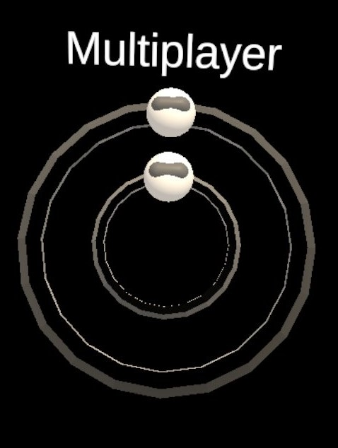

Multiplayer Menu
The menu to host or join a multiplayer session. Actually, even in single player, the application runs a server but it is running on local host (127.0.0.1:7777). This menu has a holographic base to be able to visualize the connection processes through animations.
- Input field Player Name. The name that will be displayed to the other players.
- Input field Server IP. The IP of the host-to-be on the Local Area Network (LAN) where every users are connected. The host can know his IP address by looking at the advance settings of the WiFi connection from the Meta Quest 2 main menu. To open the Meta Quest 2 main menu, click on the Oculus Button on the right controller. Then, spot the WiFi icon and click on it. Open the current active connection and go to the bottom of the menu.
- Input field Connection Port. Default is 7777. That default port should be usable on the Meta Quest 2. You can leave the field empty to use the default value.
- Input Field Password. To be customized at the user's discretion.
- Button Host. Will try to start a server with the information given in the input fields. Will fall back to a local single player server (127.0.0.1:7777) if it fails to do so. The main reason for failure is usually a mistake in the IP address.
- Button Join. Will try to connect to a host with the information provided in the input fields. KNOWN ISSUE: failed connection to the host currently freezes the app. You need to force quit ECellDive via the Meta Quest 2 menu.